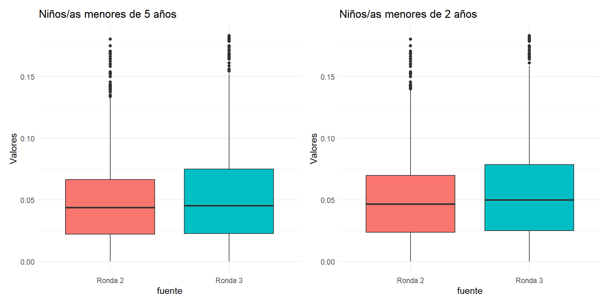
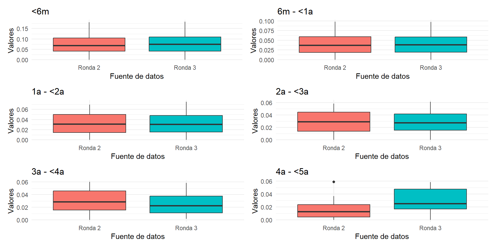

Análisis Velocidad de crecimiento
Consistencia de las mediciones ENDI
Inconsistencia por velocidad de crecimiento
Para el análisis nos quedamos únicamente con las mediciones que tengan una diferencia máxima de hasta 30 días entre el último control de Niño Sano en MSP y la medición de talla/longitud de la ENDI.
Ronda 2
| Nacional |
2,804 |
641 |
22.86% |
1,059 |
37.77% |
| Sexo |
| Hombres |
1,436 |
351 |
24.44% |
528 |
36.77% |
| Mujeres |
1,368 |
290 |
21.20% |
531 |
38.82% |
| Provincia |
| Azuay |
109 |
23 |
21.10% |
42 |
38.53% |
| Bolívar |
148 |
42 |
28.38% |
46 |
31.08% |
| Carchi |
120 |
28 |
23.33% |
37 |
30.83% |
| Cañar |
117 |
32 |
27.35% |
46 |
39.32% |
| Chimborazo |
115 |
18 |
15.65% |
47 |
40.87% |
| Cotopaxi |
75 |
24 |
32.00% |
27 |
36.00% |
| El Oro |
143 |
39 |
27.27% |
46 |
32.17% |
| Esmeraldas |
150 |
54 |
36.00% |
46 |
30.67% |
| Guayas |
61 |
10 |
16.39% |
30 |
49.18% |
| Imbabura |
109 |
22 |
20.18% |
38 |
34.86% |
| Loja |
96 |
24 |
25.00% |
32 |
33.33% |
| Los Ríos |
47 |
16 |
34.04% |
15 |
31.91% |
| Manabí |
160 |
26 |
16.25% |
72 |
45.00% |
| Morona Santiago |
109 |
37 |
33.94% |
35 |
32.11% |
| Napo |
145 |
27 |
18.62% |
49 |
33.79% |
| Orellana |
96 |
20 |
20.83% |
47 |
48.96% |
| Pastaza |
90 |
12 |
13.33% |
38 |
42.22% |
| Pichincha |
231 |
54 |
23.38% |
77 |
33.33% |
| Santa Elena |
133 |
13 |
9.77% |
54 |
40.60% |
| Santo Domingo |
130 |
25 |
19.23% |
57 |
43.85% |
| Sucumbíos |
134 |
29 |
21.64% |
55 |
41.04% |
| Tungurahua |
153 |
31 |
20.26% |
77 |
50.33% |
| Zamora Chinchipe |
133 |
35 |
26.32% |
46 |
34.59% |
Ronda 3
| Nacional |
3,230 |
848 |
26.25% |
1,069 |
33.10% |
| Sexo |
| Hombres |
1,645 |
431 |
26.20% |
540 |
32.83% |
| Mujeres |
1,585 |
417 |
26.31% |
529 |
33.38% |
| Provincia |
| Azuay |
79 |
22 |
27.85% |
25 |
31.65% |
| Bolívar |
169 |
33 |
19.53% |
55 |
32.54% |
| Carchi |
93 |
32 |
34.41% |
21 |
22.58% |
| Cañar |
106 |
32 |
30.19% |
34 |
32.08% |
| Chimborazo |
119 |
28 |
23.53% |
36 |
30.25% |
| Cotopaxi |
118 |
43 |
36.44% |
38 |
32.20% |
| El Oro |
168 |
40 |
23.81% |
56 |
33.33% |
| Esmeraldas |
224 |
60 |
26.79% |
67 |
29.91% |
| Guayas |
118 |
18 |
15.25% |
51 |
43.22% |
| Imbabura |
96 |
20 |
20.83% |
33 |
34.38% |
| Loja |
138 |
43 |
31.16% |
38 |
27.54% |
| Los Ríos |
153 |
33 |
21.57% |
57 |
37.25% |
| Manabí |
158 |
44 |
27.85% |
63 |
39.87% |
| Morona Santiago |
77 |
20 |
25.97% |
26 |
33.77% |
| Napo |
200 |
56 |
28.00% |
72 |
36.00% |
| Orellana |
212 |
56 |
26.42% |
67 |
31.60% |
| Pastaza |
209 |
51 |
24.40% |
74 |
35.41% |
| Pichincha |
121 |
35 |
28.93% |
32 |
26.45% |
| Santa Elena |
89 |
23 |
25.84% |
25 |
28.09% |
| Santo Domingo |
119 |
30 |
25.21% |
33 |
27.73% |
| Sucumbíos |
239 |
61 |
25.52% |
91 |
38.08% |
| Tungurahua |
100 |
23 |
23.00% |
40 |
40.00% |
| Zamora Chinchipe |
125 |
45 |
36.00% |
35 |
28.00% |
Estadísticos descriptivos
Ronda 2
| <6 meses |
413 |
205 |
208 |
12.83% |
17.97 |
7.48 |
0.07 |
0.04 |
| 6-11 meses |
333 |
174 |
159 |
17.42% |
18.95 |
7.69 |
0.04 |
0.02 |
| 12-23 meses |
226 |
113 |
113 |
23.89% |
19.29 |
7.78 |
0.03 |
0.02 |
| 24-35 meses |
89 |
38 |
51 |
21.35% |
19.78 |
7.25 |
0.03 |
0.02 |
| 36-47 meses |
33 |
21 |
12 |
21.21% |
19.45 |
8.15 |
0.03 |
0.02 |
| 48-59 meses |
10 |
6 |
4 |
20.00% |
20.50 |
8.63 |
0.02 |
0.02 |
Ronda 3
| <6 meses |
574 |
295 |
279 |
10.10% |
18.07 |
7.54 |
0.08 |
0.05 |
| 6-11 meses |
391 |
214 |
177 |
11.25% |
19.30 |
7.39 |
0.04 |
0.03 |
| 12-23 meses |
231 |
102 |
129 |
22.51% |
19.06 |
7.75 |
0.03 |
0.02 |
| 24-35 meses |
77 |
40 |
37 |
15.58% |
17.99 |
8.77 |
0.03 |
0.02 |
| 36-47 meses |
30 |
19 |
11 |
20.00% |
21.13 |
6.13 |
0.03 |
0.02 |
| 48-59 meses |
10 |
4 |
6 |
20.00% |
18.00 |
6.24 |
0.03 |
0.02 |
Correlación
En Ronda 2, sin eliminar los valores implausibles por velocidad de crecimiento existe una correlacion de 0.729 entre la última medición de control de Niño Sano y la medición ENDI. Eliminando los valores implausibles la correlación sube a 0.989. Para Ronda 3, sin eliminar valores implausibles la correlación existe una correlación de 0.757. Eliminando los valores implausibles la correlación sube a 0.988.
Identificar mediciones ENDI MSP consistentes
Distribución categorías
| Categoría |
Ronda 1 |
Ronda 2 |
Ronda 1 |
Ronda 2 |
| Medición ENDI menor a medición MSP |
1059 |
1069 |
37.76747 |
33.09598 |
| Velocidad de crecimiento dentro del rango esperado |
1104 |
1312 |
39.37233 |
40.61919 |
| Velocidad de crecimiento por encima del rango esperado |
641 |
849 |
22.86020 |
26.28483 |
Densidad de crecimiento promedio por dia (solo casos cuya velocidad de crecimiento se encuentra dentro del rango aceptable)
Niños/as menores de 5 y menores de 2 años

Niños/as por grupos de edad

Estadisticos descriptivos del crecimiento promedio por día
Resumen Estadístico por Grupo de Edad (R2 vs R3)
| Grupo Edad |
Ronda 2 |
Ronda 3 |
Ronda 2 |
Ronda 3 |
Ronda 2 |
Ronda 3 |
Ronda 2 |
Ronda 3 |
Ronda 2 |
Ronda 3 |
| <6m |
413 |
573 |
0.073 |
0.076 |
0.044 |
0.046 |
0.069 |
0.075 |
0.180 |
0.183 |
| 6m - <1a |
333 |
391 |
0.039 |
0.040 |
0.024 |
0.025 |
0.037 |
0.039 |
0.098 |
0.097 |
| 1a - <2a |
226 |
231 |
0.032 |
0.032 |
0.020 |
0.019 |
0.031 |
0.030 |
0.069 |
0.075 |
| 2a - <3a |
89 |
77 |
0.029 |
0.028 |
0.017 |
0.017 |
0.029 |
0.028 |
0.058 |
0.061 |
| 3a - <4a |
33 |
30 |
0.031 |
0.026 |
0.017 |
0.018 |
0.029 |
0.022 |
0.060 |
0.058 |
| 4a - <5a |
10 |
10 |
0.018 |
0.029 |
0.019 |
0.021 |
0.013 |
0.025 |
0.059 |
0.058 |